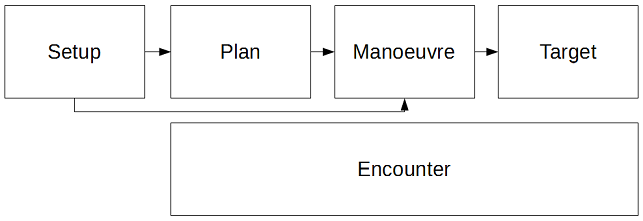
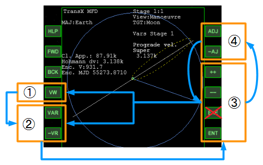
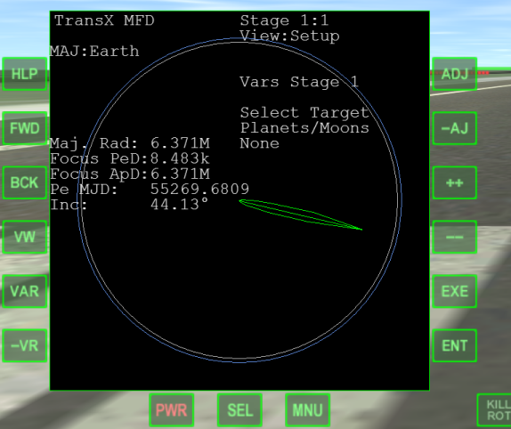
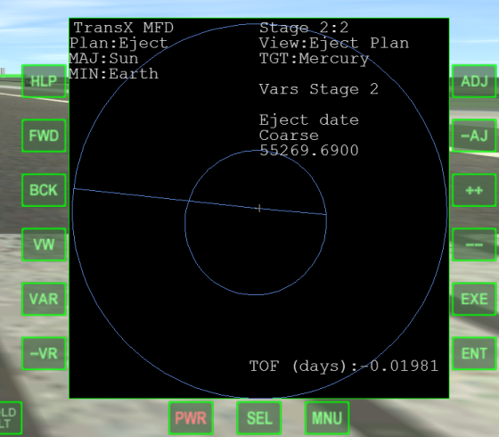
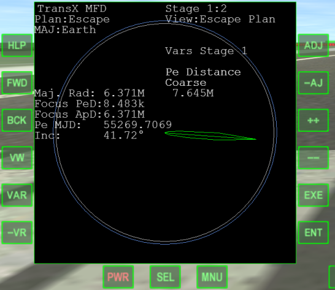
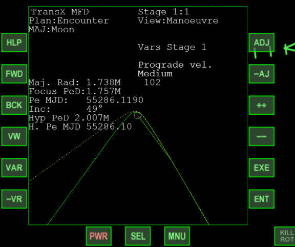
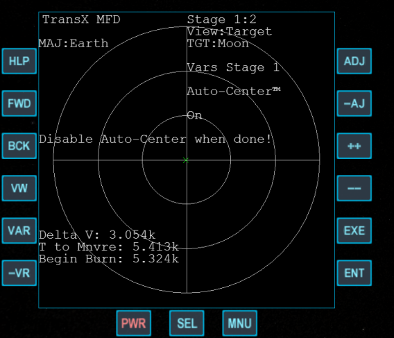
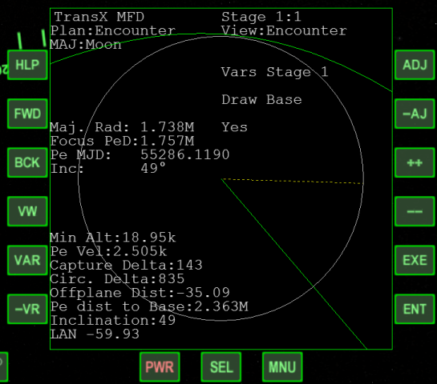

TransXの基本
TransXはマニューバ※を作成するためのMFDです。
「いつ、どの方向を向いて」「どれだけエンジンを噴射するか（=Delta V）」を決定することができます。
※マニューバ(Manoeuvre)：宇宙船のエンジンを噴射して軌道を変更すること
TransXの更新と設定（最新版のダウンロード）
TransXの解説一覧
TransXの流れ
TransXを使用するときの大まかな流れについて説明する。
惑星間飛行でも、スイングバイであっても、基本的には同じ作業の繰り返しとなる。
Viewの選択
マニューバ作成の各段階に応じて、Viewを切り替えながら作業する。
ViewはMFD左側のVWボタンをクリックすることで変更できる。

| View:Setup | 目的地を選択する。 軌道を表すグラフの表示方法などの設定を変える。 |
| View:Eject / Escape Plan | 他の惑星まで飛んだり、スイングバイしたりといったマニューバの計画を立てる。 地球上から月へと飛ぶ場合などでは必要ない。 |
| View:Manoeuvre | 他の惑星に出発したり、軌道修正をしたりするためのマニューバを作成する。 |
| View:Target | エンジンを噴射し、マニューバを実行するときに使用する。 白い十字線の中央に目印（緑色の×）を合わせることで、機体の向きを決められる。 |
| View:Encounter | 目標の惑星に最接近したときの高度などが表示される。 これを見ながら、マニューバやプランを微調整する。 |
これらの順番は絶対ではなく、前後することもある。
例えば、地球から月へのフライトは以下のような流れになる。
- 地球周回軌道上に出て、月と軌道面を一致させる（Align MFDでRIncをゼロにする）
- View:SetupでMoonをターゲットに選択
- 地球→月のフライトでは、View:Planは使用しない（表示されない）
- View:Manoeuvreで月に向かうマニューバを作成
（同時に、View:Encounterで結果を確認する） - View:Targetにしてマニューバを実行する
VARの選択
VAR = Variable = 変数。
それぞれのViewでVAR or -VRをクリックして、必要な機能にアクセスする。
機能を選択したら、++ or --のどちらかをクリックして実行 or 数値を入力する。
- VWをクリックしてViewを選択
- VAR（もしくは-VR）をクリックして機能を選択
- ++ or --（もしくはENT）をクリックして入力／実行
- 必要に応じてADJ(Adjust)か-AJをクリックして、一度に変化する量を変える
- 同じViewの別の機能を使うならVAR（②に戻る）
Viewを切り替えるならVWをクリック（①に戻る）

Stageの選択
FWDをクリックすると、次のStage（ステージ）が現れる。
BCKをクリックすると、一つ前のステージに戻る。
FWD = Forward = 次に進む。BCK = Back = 前に戻る。
惑星間飛行においては、FWDをクリックして複数のステージを作る必要がある。
Stage 1では地球を周るパーキング軌道。
Stage 2では地球を出発点とし、目的地の惑星に至る遷移軌道。
Stage 3は目的地の惑星の拡大図、というように使い分ける。
Viewの解説
各Viewで使える機能のうち、主要なものについて解説する。
VARをクリックすると、それぞれの機能を呼び出すことができる。
View:Setup
マニューバを作成するための準備として、さまざまな設定を変更する。

Select Target
ターゲット（目的地）を選択する。
月に向かうのか、今いる惑星の周回軌道上に出るのか、あるいは他の惑星に向かうのか選択する。
地上から他の惑星に向かう場合は、まず++をクリックしてEscapeを選択。
そこからFWDをクリックして次のステージを作成することで、他の惑星をターゲットとして選べるようになる。
Graph Projection / Scale to View
軌道予測のグラフと、目標となる天体の表示方法を変更する。
重要：計算結果や実際のマニューバには一切影響しない。
角度の問題でグラフが見づらいとき、目標の惑星を拡大して見るときに使用する。
View:Eject Plan
遷移軌道の計画（プラン）を作成する。
惑星間飛行や、月から地球に帰ってくるときなどに使用する。
ここで実際のマニューバを作成するわけではなく、「マニューバを作るために参考にする」ための計画を作る。

基本的な操作はView:Manoeuvreとまったく同じ。
ADJ or -AJをクリックしてAuto-minを選択すると、自動でDelta V（ターゲットに向かうために必要な加速）を計算する。
マニューバの要素すべてをAuto-minにして、Eject. date（他の惑星に出発する日付時刻）だけを操作すると、自動的に最小限のDelta Vを決めてくれる。
View:Escape Plan
打ち上げの計画（プラン）を作成する。
惑星間飛行においては、あらかじめ作成しておいた遷移軌道に接続できるように打ち上げる。
したがって、Eject Plan→Escape Planの順番で作業することになる。

Pe Distance
Pe Distance = Periapsis Distance
他の惑星に向かう前のパーキング軌道の高度を決める。
Alt（地上からの高度=Altitude）ではなく、Rad（惑星の中心からの半径＝Radius）を指定する。
地球の場合、半径は6.371M（6.371Mm（メガメートル）=6371km）なので、6.571Mなら高度200kmになる。
Ej Orientation
Ej Orientation = Eject Orientation
「打ち上げ時にどの方角に向かって飛ぶか」を決める。
++ or --をクリックして、白い線と緑の線が重なるようにすると、Heading（打ち上げ方位）が決まる。
その方角に向かって打ち上げることになる。
エンジンを噴射するとHeadingの数字は消えるので、暗記するかメモを取っておく。
View:Manoeuvre
マニューバの解説については以下の記事を参照。
Part11 TransXのマニューバ(Manoeuvre)

必ず最初に、++をクリックしてManoeuvre modeをonにする。
マニューバを実行し終わったら、必ずoffにする。
View:Escape Planを参考にしながらマニューバを作る場合は、ENTをクリックしてDelta Vなどの数字を直接入力することもできる。
View:Target
エンジンを噴射し、マニューバを実行するために使用する。

Auto-centerを選んでonにすると、自動で機体の向きを合わせてくれる。※
※Auto-centerが安定しない場合は、いったんAuto-centerをoffにする。
手動で宇宙船を回転させ、白い十字の中央に緑の×が来るようにする。
ある程度向きを合わせたら、もう一度Auto-centerをonにする。
Begin Burn（エンジン噴射開始）の数字がゼロになったらエンジンを噴射する。
マニューバが終わったら、必ずAuto-centerをoffにする。
Delta Vの数字がゼロになるまでエンジンを噴射するのが基本だが、少し残しておいて、Manoeuvre modeをoffにしてから微調整したほうがよい。
View:Encounter
目標の天体にもっとも接近したときの高度や、予想落下地点などの情報を表示する。
これを見ながらマニューバを作成したり、軌道を修正したりする。

| Focus PeD | Focus Periapsis Distance | 現在の軌道から予測されるPeの高さ。 惑星の中心からの半径で表示される。 |
| Hyp PeD | Hypothetical Periapsis Distance | 現在作成中のマニューバから予測される、仮定の(Hypothetical)Peの高さ。 |
| Min Alt | Minimum Altitude | 最接近時の地表からの高度。 |
| Offplane Dist | Off plane Distance | 地上基地などの目標地点から自分の軌道までの距離。 |